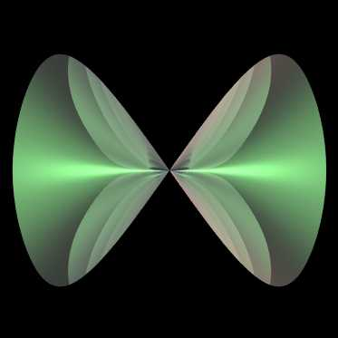

Whitney Umbrella
By Paul Bourke
November 2002
|
x = 0.5 sin2(u) cos(2 v)
y = 0.5 sin2(u) sin(2 v)
z = sin(u) sin(v)
0 <= u <= pi, 0 <= v <= 2 pi
|
There is a singularity at (0,0,0)
and a self intersection along the line x=y=0.
Implicit form
x2 y - z2 = 0

|